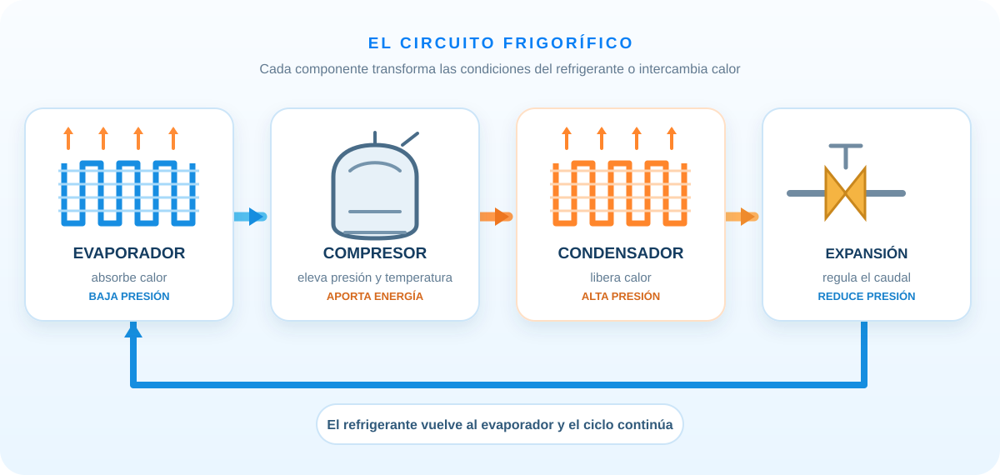

Evaporador
Recibe refrigerante frío y de baja presión. Absorbe calor del aire o del producto que se quiere enfriar; el refrigerante hierve y sale principalmente como vapor.
Absorbe calorIdentificá los componentes de un sistema frigorífico, qué transformación ocurre en cada uno y cómo se conectan para trasladar calor.

Los equipos pueden combinar las piezas de maneras distintas. Abrí cada tema y ubicá qué es común y qué depende del diseño.
En el ciclo de compresión de vapor, el refrigerante pasa repetidamente por cuatro funciones básicas. En sistemas reales puede haber válvulas, controles e intercambiadores adicionales.
Recibe refrigerante frío y de baja presión. Absorbe calor del aire o del producto que se quiere enfriar; el refrigerante hierve y sale principalmente como vapor.
Absorbe calorAspira vapor desde el lado de baja y lo comprime. Así eleva su presión y temperatura, y mantiene la circulación del refrigerante.
Aporta trabajo al cicloRecibe vapor caliente y de alta presión. Libera calor al aire, al agua u otro medio y el refrigerante pasa principalmente a líquido.
Libera calorDosifica el caudal que entra al evaporador y provoca una caída de presión. Puede ser un tubo capilar o una válvula, según el equipo.
Regula el pasoEvaporador y condensador son intercambiadores: el nombre de cada uno describe el cambio principal del refrigerante en ese tramo, no una pieza idéntica en todos los equipos.
Estas piezas ayudan a almacenar, limpiar, proteger o facilitar la lectura del circuito. Su presencia y ubicación dependen del tipo de sistema.
Retiene partículas y ayuda a reducir humedad dentro del circuito. Protege componentes sensibles, especialmente el dispositivo de expansión.
El recipiente de líquido puede almacenar refrigerante líquido en el lado de alta. El acumulador de succión ayuda a evitar que llegue líquido al compresor. No son la misma pieza y no todos los equipos tienen ambos.
Una ventana permite observar el fluido en ciertos diseños. Por sí sola, una burbuja o un cambio de color no confirma la causa de una falla ni la carga correcta.
Permiten aislar o acceder a sectores en equipos que los incorporan. Se utilizan en procedimientos técnicos con instrumentos y prácticas adecuadas.
El aceite lubrica el compresor y circula en cierta medida con el refrigerante. Algunos sistemas añaden separadores o trampas según su diseño y recorrido de tuberías.
Conectan las partes por las que circula refrigerante. El diámetro, trazado, soporte y aislamiento se seleccionan para el sistema concreto.
El circuito de aire y el de refrigerante se mantienen separados, pero se encuentran térmicamente en los intercambiadores.
Mueve aire a través de las aletas del intercambiador. El axial es frecuente en unidades exteriores; la turbina o soplador suele impulsar aire en interiores.
Retiene parte del polvo antes de que el aire llegue al serpentín. No es el filtro secador del circuito refrigerante: son piezas distintas y filtran medios diferentes.
Recogen y conducen el agua que se condensa sobre una superficie fría. El agua de drenaje no es refrigerante: procede de la humedad del aire.
Serpentín limpio, filtro apropiado y flujo de aire libre ayudan al intercambio; las tareas de acceso interno dependen del equipo y deben seguir sus indicaciones.
El control compara las mediciones con el ajuste elegido. Sensores de temperatura pueden vigilar el aire, serpentines u otras condiciones según el equipo.
Coordina sensores, ventiladores y compresor; en equipos modernos puede modular la capacidad y gestionar protecciones y modos.
Conductores, conexiones, dispositivos de maniobra y protecciones suministran y controlan la energía eléctrica. Su configuración varía con la potencia y el diseño.
Capacitores, contactores, relés, variadores y otros elementos aparecen en algunos equipos. La placa y el esquema eléctrico del modelo permiten identificar qué tiene cada uno.
El intercambiador interior actúa como evaporador y el exterior como condensador durante el enfriamiento.
Una válvula inversora y otros controles permiten invertir la función de los intercambiadores para calentar o enfriar.
Por eso, un diagrama didáctico muestra las funciones básicas; el esquema real puede tener más elementos y una disposición distinta.
Respuestas: el evaporador absorbe y el condensador libera; el compresor aumenta presión y temperatura; uno limpia aire y el otro protege el circuito de refrigerante; no, trabajan en lados y condiciones diferentes; la válvula inversora junto con los controles.